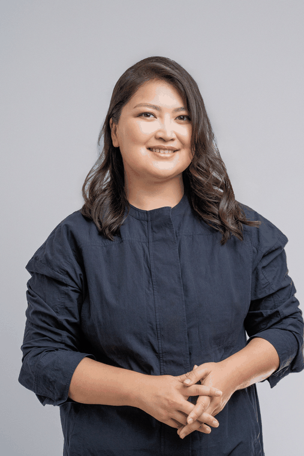
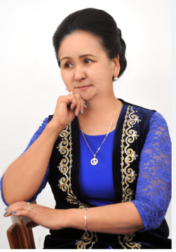

Биз жөнүндө
Китептердин артында турган адамдар.

Чинара Султаналиева
Куратор, автор
Чинара Султаналиева — кыргыз тилиндеги балдар китеп басмаканачылык тармагын өнүктүрүүгө жана тил, баяндоо өнөрү, медиа аркылуу маданий мурасты бекемдөөгө арналган социалдык ишкер. Ал заманбап кыргыз маданий туюндуруусун кеңейтүү жана маданий өндүрүш формаларын кайра жандандыруу үчүн иштейт.
Анын кесиптик тажрыйбасына тоо-кен тармагындагы стратегиялык коммуникациялар жана отчеттуулук боюнча иштер, ошондой эле кийинчерээк туруктуу өнүгүү, калдыктарды башкаруу, пластикти кайра иштетүү жана энергияны үнөмдүү колдонуу демилгелерин камтыган, эл аралык өнүктүрүү өнөктөштөрү менен ишке ашырылган экологиялык башкаруу тармагындагы иштер кирет.

Кайырбүбү Чолпонкулова
Автор, акын, котормочу, ырчы
Кайырбүбү Чолпонкулова — чыгармачылыгы ар кыл муундагы аялдардын чыдамкайлыгын, өзүн-өзү ишке ашыруусун жана турмуштук тажрыйбасын чагылдырган кыргыз акыны жана элдик ырчысы. Чолпонбай айылында туулган ал биринчи ырын он жашында жазган, бирок жаш кездеринин көбүн үй-бүлөсүн багууга жана жаш курагында жолдошунан ажыроо сыяктуу жеке кыйынчылыктарды жеңүүгө арнаган.
Ал 60 жашында Улуттук консерваторияда билимин улантууга жетишкен. Ырдай баштап, поэзияга кайра кайткан. Ал эки жыйнак чыгарган: «Жүрөгүмө сактап келем тумардай» жана «Ырга айланган өмүр». Анын чыгармачылыгы каалаган курактагы аялдар үчүн чыгармачылык ишке ашуунун маанилүүлүгүн баса белгилейт. Ал адабий жана чыгармачылык изденүүлөрүн улантууда.
Чыгармачыл команда жана кызматкерлер
| Аты-жөнү | Ролу | |
|---|---|---|
| Айнел Тавалдиева (лакап аты «Nikkel Erin») | Эки китептин тең сүрөтчүсү; өзүнүн да комиксин жаратат — анын чеберчилиги эки китепте тең байкалат | @little.pumpkin.ghost |
| Карина Чоюбекова | Верстальщица — китептерди акыркы басма түрүнө алып келген экөөнүн бири | — |
| Айжамал Борисова | Верстальщица — китептерди акыркы басма түрүнө алып келген экөөнүн бири | @jamalborisova |
| — | Тариздөө стилизациясы («Барактоо») | @foodtimeart |
| — | Редактор | @aliya_suran |
| Самат Бараталиев | Китептерде колдонулган бардык жаныбар үндөрүн жана салттуу аспаптардын күүлөрүн чогулткан жана түзгөн | @sam_des |
Snow Leopard Trust фондуна өзгөчө ыраазычылык билдиребиз — жаныбарлар китебинде колдонулган илбирстин үнү фонддун камера-тузак жаздырууларынан алынган: бул Кыргызстанда жаздырылган илбирстин чыныгы үнү.
Китептерде колдонулган бардык жаныбар үндөрүн жана улуттук аспаптардын күүлөрүн тапкан жана чогулткан Самат Бараталиевге өзгөчө ыраазычылык билдиребиз.